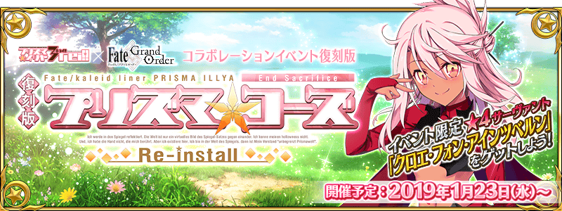
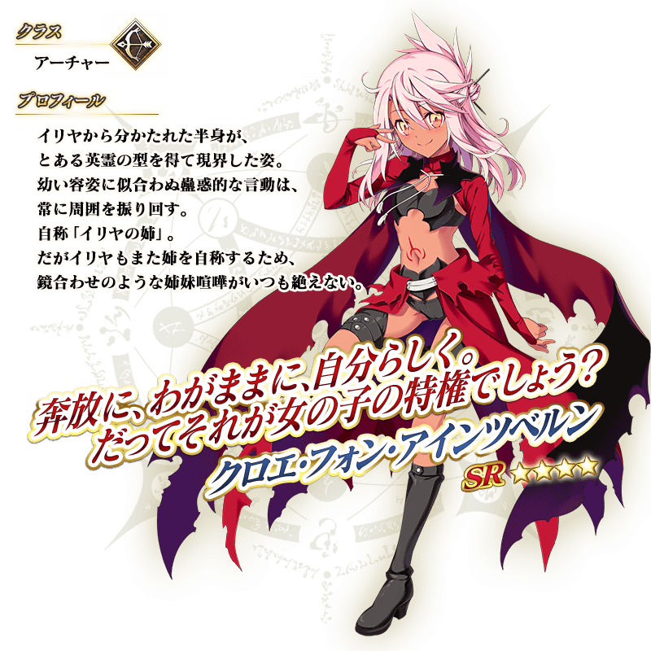
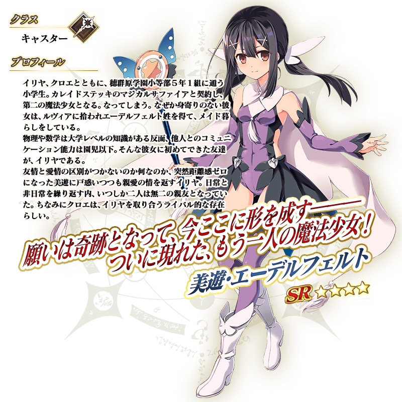

◆活動舉辦時間◆
2019年1月23日(三) 17:00～(預定)
◆活動概要◆
舉辦合作活動「復刻版:魔法少女紀行 ～Prisma・Codes～ -Re-install-」！
送上「Fate/kaleid liner 魔法少女☆伊莉雅!!」的原作者ひろやまひろし監修的原創故事，舉辦特別的活動！
來自「Fate/kaleid liner 魔法少女☆伊莉雅!!」的「克洛伊・馮・愛因茲貝倫」做為活動限定Servant「★4(SR)克洛伊・馮・愛因茲貝倫」登場！
本活動是以魔術少女的世界做為舞台，女性Servant活躍的活動。
隨著主線關卡的進行，會發生挑戰與強力魔術少女戰鬥的「World End Match」。
打倒魔術少女，推進主線關卡，讓活動限定Servant「★4(SR)克洛伊・馮・愛因茲貝倫」正式加入吧！
※本活動為再調整在2016年舉辦的合作活動「復刻版:魔法少女紀行 ～Prisma・Codes～」更容易遊玩的「復刻版活動」。
※一部份的關卡為日後開放。
◆活動參加條件◆
滿足以下條件的Master才能參加
・通過「特異點F 炎上汙染都市 冬木」

與本活動的開始同時在聖晶石召喚舉辦期間限定Pick Up召喚！ 來自「Fate/kaleid liner 魔法少女☆伊莉雅!!」的「美遊・艾德費爾特」做為新Servant「★4(SR)美遊・艾德費爾特」以期間限定登場！

本活動的期間中，強化「★4(SR)克洛伊・馮・愛因茲貝倫」時的獲得經驗值變成2倍。
是讓剛加入的「★4(SR)克洛伊・馮・愛因茲貝倫」等級一口氣上升的機會！
◆舉辦時間◆
2019年1月23日(三) 17:00～(預定)


本活動的期間中，下表的Servant在活動關卡中會得到「自身的攻擊威力提升」與「絆點數獲得量提升」的加成。
強化對象Servant，挑戰活動吧！
※活動加成的效果量因Servant而異。
※瑪琇・基利艾拉特沒有「絆ポ點數獲得量提升」的效果。
※自1月19日(六) 16:00，在Servant選擇畫面和Servant強化畫面等追加「下次活動對象」篩選器。
由於是只顯示於下個舉辦活動活躍Servant的便利功能，敬請活用。
【活動加成的對象Servant】
| 職階 | 稀有度 | Servant名 |
|---|---|---|
| Archer | ★★★★ | 克洛伊・馮・愛因茲貝倫 |
| Rider | ★★★★★ | 女王梅芙 |
| Caster | ★★★★★ | 伊莉雅絲菲爾・馮・愛因茲貝倫 |
| ★★★★ | 海倫娜・布拉瓦茨基 | |
| ★★★★ | 酒吞童子 | |
| ★★★★ | 童謠 | |
| ★★★★ | 美遊・艾德費爾特 | |
| ★★★★ | 美狄亞〔Lily〕 | |
| Shielder | ★★★ | 瑪琇・基利艾拉特 |
※就算對象Servant在本活動的主線劇本也會有未登場的情況。